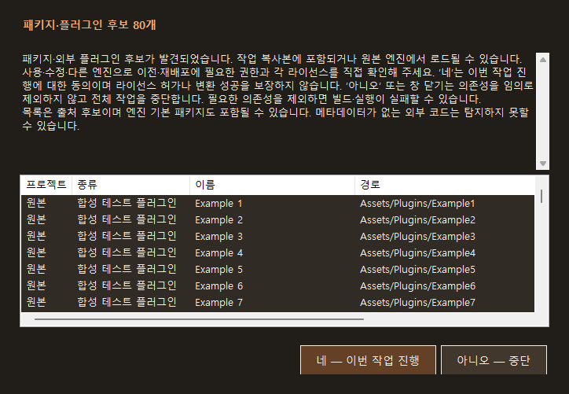
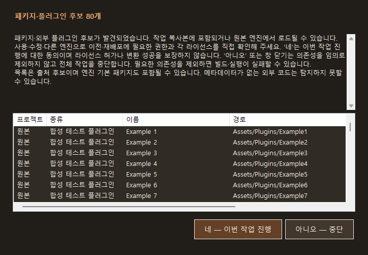
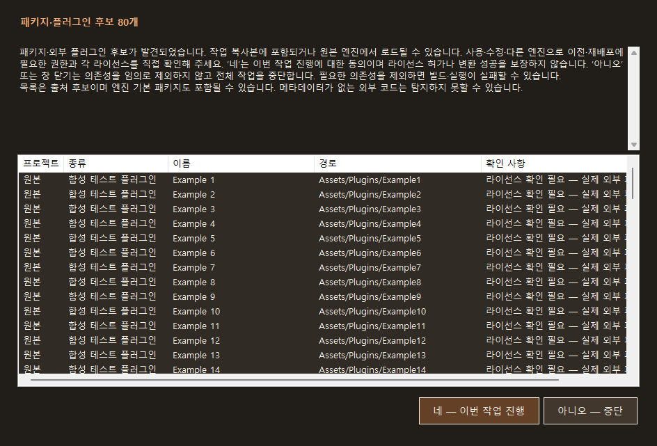

Tracefolio REPORTS & ISSUES
Tracefolio REPORTS & ISSUES실제로 실행한 QA와 미실행 엔진 왕복을 구분합니다
부분 완료배포 exe·CLI·C#/C++ 실행 검증은 했지만 Unity·Unreal 왕복 실행은 하지 않았습니다. 지난 기록과 배포 파일을 재확인해 범위를 명확히 등록합니다.
작업 결과
실행 가능한 컴포넌트 QA는 수행했습니다. 그러나 엔진에서 프로젝트를 변환·빌드·실행하는 전체 왕복 QA는 하지 않았습니다. 따라서 전체 포팅 실행을 검증했다는 결론은 내릴 수 없습니다.
지난 QA의 정확한 상태는 “컴포넌트 실행 검증 완료, 실제 엔진 E2E QA 미실행”입니다. 이 검토의 부분 완료 표시는 엔진 QA가 남아 있음을 뜻합니다.
2026-10-30 이미지 누락 보완: 아래는 2026-10-29 실제 WinForms 렌더링 QA에서 저장한 화면입니다. 합성 플러그인 후보 80개를 사용했으며 엔진 실행 화면은 아닙니다.



변경 내용
적용 내용
- 제품 코드를 이번에 추가로 변경하거나 새 제품 빌드를 만들지 않았습니다.
- 실제 실행, 합성/독립 실행, 읽기 전용 조사, 미실행 엔진 QA를 분리했습니다.
- 과거의 “QA 완료” 문구를 전체 프로젝트 실행 성공으로 확대해 해석하지 않도록 명시했습니다.
- 지난 재현·수정 8종은 별도의 버그 보고서에, 이번 범위 검토는 결과 보고서에 등록합니다.
- 기존 v1 보고서는 보존하고 원본 JSON 계약 v2에서 새 문서를 생성합니다.
- v1.0.1 문서: 누락된 실제 QA 캡처 3개를 무손실 WebP로 첨부했습니다. 이전 v1.0.0은 보존합니다.
검증
- 아래 제품 테스트는 모두 2026-10-29에 수행한 기록입니다. 2026-10-30에 다시 실행했다고 표시하지 않습니다.
- 이전 배포 Core DLL 재현 10개 중 실패 8개, 수정 후 독립 QA 18개 통과, 기존 회귀 검사 403개 통과를 대조했습니다.
- 실제 배포 exe의 오프스크린 자체 검사와 한글 폴더에서의 실행, CLI 프로세스의 잘못된 엔진 값·리디렉션 승인 차단, 원본/복원 C# 및 생성 C++ 독립 실행을 확인한 기록입니다.
- C++의 벡터/쿼터니언 저장 구조는 대역입니다. Unreal 런타임·Transform·GC 실행 검증이 아닙니다.
- WinForms OnClick 결과 전달과 기본/최소 레이아웃 렌더링을 확인했습니다. 실제 사람이 마우스·키보드로 모달 창을 조작하는 E2E 테스트는 아닙니다.
- 사용자 제공 Unity 입력의 파일 60개·C# 2개·의존성 후보 155개를 읽기 전용으로 조사했습니다. 추적한 원본 파일 4개의 해시는 같았습니다. 엔진 실행 또는 포팅 완료 검증이 아닙니다.
- 방화벽 규칙은 읽기 전용으로 조회했습니다. Unity·Unreal·게임·엔진 빌드는 이번 QA에서 실행하지 않았습니다.
- 오늘은 보존된 기록의 범위를 대조하고, 배포 Core·ZIP·압축 안의 Core SHA-256과 ZIP CRC/파일 수 370개를 재확인했습니다.
- 공개용 검증 요약 JSON에는 개인 경로·원본 로그·세션 기록을 제외했습니다.
- 원본 PNG와 압축 WebP의 RGB 픽셀이 모두 같은지 비교했습니다. 각 이미지 200KB 미만이며 공개 전 개인 경로가 없는지 시각 확인했습니다. 이번 보완에서 제품·엔진 테스트를 새로 실행하지 않았습니다.
남은 사항
- Unity → Unreal → Unity 실제 엔진 포팅·빌드·게임 실행을 확인하는 엔진 E2E QA는 미실행입니다.
- 실제 게임플레이·화면·물리·애니메이션 동등성, 임의 외부 플러그인, 모든 엔진 버전의 지원은 이번 결과로 보증하지 않습니다.
- 실제 모달 사용자 입력·모든 DPI/해상도·실물 심볼릭 링크는 미검증입니다.
- 다음 엔진 E2E 검증은 승인된 안전 실행기·개인 복사본·방화벽 사전 확인을 유지하고, 원본과 결과의 실제 실행을 대조해야 합니다. 안전 차단을 우회하거나 과거 캡처로 대체해서는 안 됩니다.
- Windows 실행 폴더와 ZIP은 로컬 배포본입니다. 프로그램 파일을 공개 다운로드로 올린 것은 아닙니다.
작업 시간
- 제안 시간: 이미지 첨부 보완 및 외부 배포 확인 5~10분.
- 실제로 완료된 시간: 2026-10-30 03:18:00 KST 착수. 이미지 준비·게시 후 최종 응답에 전체 소요 시간과 완료 시각을 기록합니다.
- XERJ: 미사용 — 보존된 QA 기록과 배포 파일 무결성 대조·보고서 등록 작업이며 제품 코드 검색은 불필요했습니다.